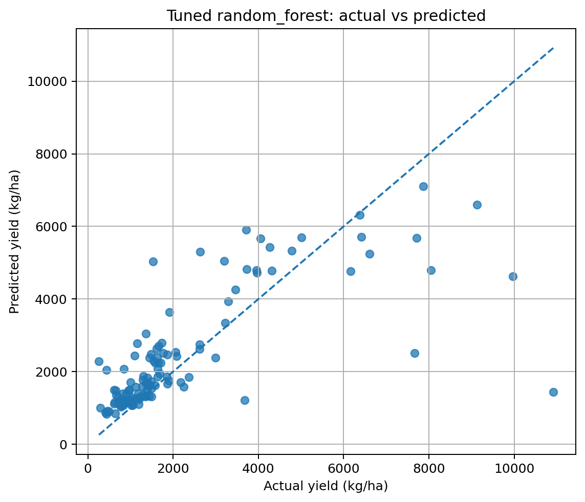
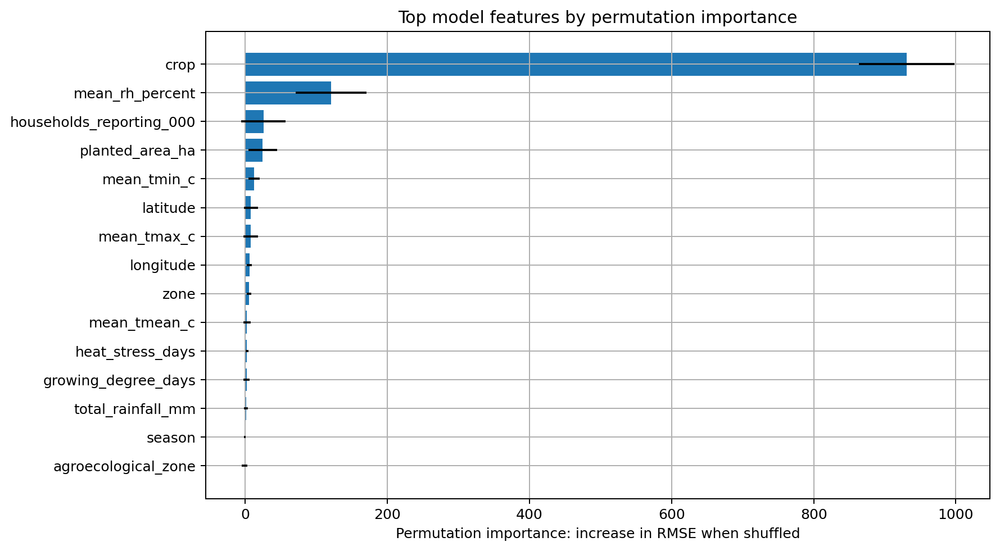
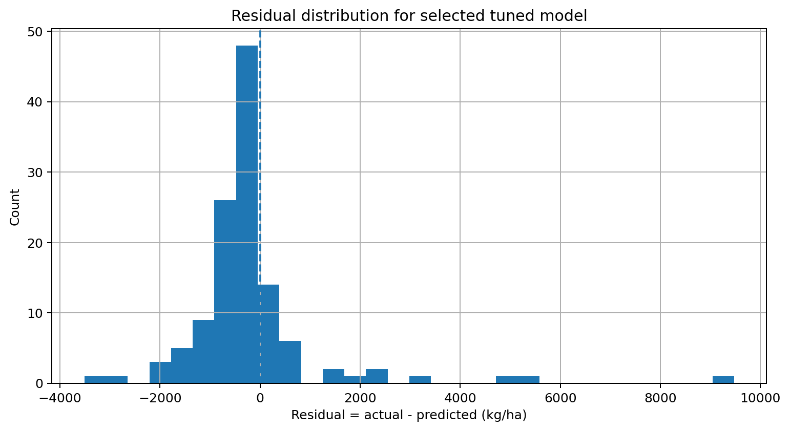
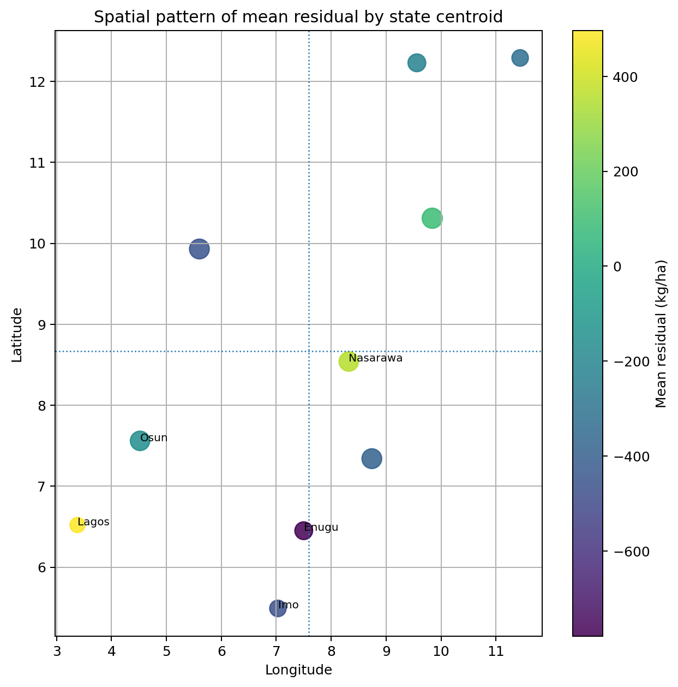

Abstract
Nigeria's crop yield varies across geography, rainfall, temperature, seasonality, crop type, and local agricultural conditions. This project asks whether survey tables, climate signals, and remote sensing can be combined in a leakage-aware way to model those differences.
The repository includes a reproducible pipeline, notebook walkthrough, report-style website, model comparison, residual analysis, and a Streamlit dashboard.
Key results
- Random Forest: RMSE 1,433.59, MAE 808.71, R2 0.535
- Extra Trees: RMSE 1,442.53, MAE 831.85, R2 0.529
- Gradient Boosting: RMSE 1,538.65, MAE 901.20, R2 0.465
The figures below show the tuned model comparison, permutation importance, and residual behavior.
Introduction
Crop yield in Nigeria is shaped by rainfall timing, heat stress, humidity, vegetation condition, crop choice, and farming practice. National averages hide state-level variation, so the analysis is framed as a practical question:
Can we combine agricultural survey tables, climate signals, and remote sensing features to model crop yield across Nigerian states and coarse agroecological zones?
Research questions
- Which features are most useful for predicting state-level crop yield?
- Do climate and Sentinel-2 features improve performance over survey data alone?
- Where are the largest prediction errors, and do they cluster by crop or zone?
Data
The core source is the NBS National Agricultural Sample Survey 2022/2023 report tables. These tables supply the yield target and the agricultural context used in the analysis. The processed table summarizes 1,053 rows, of which 490 are state-level rows with yield values.
NBS survey tables
State-level crop yield records built from the NASS 2022/2023 workbook.
Climate covariates
Rainfall, temperature, humidity, and heat-stress proxies from climate sources.
Remote sensing
Sentinel-2 vegetation indices such as NDVI, EVI, NDWI, and SAVI.
What data are included in the repository?
data/raw/nbs/nass_report_tables_2022_2023.xlsxdata/processed/nbs_crop_yield_state_zone_2022_2023.csvdata/processed/state_metadata.csvdata/processed/modeling_dataset.csv
What data are optional?
- NiMet station climate data
- NASA POWER fallback climate data
- Sentinel-2 extraction outputs
Methods
The project follows a familiar data science sequence: audit the source workbook, engineer leakage-aware features, train multiple models, evaluate them on held-out data, and inspect the errors.
Audit the source workbook and clean the crop-yield table.
Build a modeling dataset with state metadata, climate summaries, and satellite summaries.
Train baseline and tree-based models and compare metrics.
Inspect residuals by crop, zone, state, and season.
How feature engineering works
Survey variables, state metadata, climate summaries, and vegetation indices are combined into a single modeling table. Time-series climate and satellite information is condensed into seasonal summaries to keep the model table usable.
Why leakage control matters
If harvested area or harvested quantity is used directly as a predictor of yield, the model can look much better than it really is. The project removes those leakage-prone fields so the predictions reflect learned structure rather than target reconstruction.
Results
The tuned results show that tree-based models outperform the baseline and the simpler linear alternatives. That suggests the crop-yield signal is nonlinear and depends on interactions among crop, climate, zone, and state.
How to read the results
- RMSE penalizes large mistakes more strongly.
- MAE is the average absolute error in kg/ha.
- R2 measures explained variance relative to a mean baseline.
- Residual analysis shows where the model underpredicts or overpredicts yield.
Discussion
The project demonstrates that crop yield prediction is feasible with a structured GeoAI pipeline. Tree-based models outperform simpler alternatives on this dataset, and the error analysis is more informative than a single summary score.
Leakage control is essential because yield-related survey fields can otherwise make the task artificially easy. The project is therefore best treated as predictive evidence rather than causal evidence.
Recommendations
- Use Random Forest as the current best baseline.
- Prioritize richer climate alignment and better spatial resolution.
- Move from state-centroid features to plot-level geospatial data where possible.
- Expand the work into uncertainty-aware risk maps and crop-specific decision support.
Limitations
The project is strong as an educational and exploratory GeoAI study, but it still has real limitations. The data are state-level, not plot-level. The satellite summaries are coarse approximations. Some climate inputs are optional or fallback-based. And the model is predictive rather than causal.
Main threats to validity
- Aggregation hides local variation.
- Seasonal summaries may not align perfectly with crop calendars.
- Measurement noise may remain in survey tables.
- Some crops are sparse.
- Random splits can overstate performance if grouping is ignored.
Reproducibility
The repository is organized so the analysis can be rerun from the command line or explored through the dashboard.
Setup
pip install -r requirements.txt pip install -e . make quickstart
Dashboard
streamlit run streamlit_app.py
If you prefer conda, create the environment defined in `environment.yml`.
Figures
These figures are the visual proof of the story. Each one corresponds to a notebook output and appears in the report gallery.





Report & Demo
Supporting pages
How to explore it
The homepage mirrors the README narrative, while the gallery and charts let you inspect the model results visually. The Streamlit app at the repository root adds a more interactive reading experience.